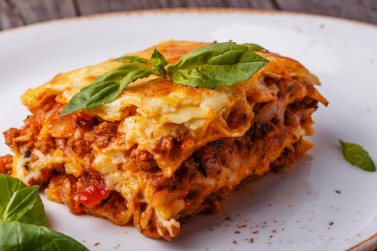

lasagna recipes
" height="310" width="310">
description
Lasagna is a classic Italian dish that consists of layers of flat pasta, a savory meat or vegetable-based sauce, and a creamy cheese filling, typically made with ricotta and mozzarella. The layers are assembled and then baked in the oven until the cheese is melted and bubbly, and the pasta is tender and flavorful. Lasagna is known for its rich, comforting taste and its ability to satisfy hunger with its hearty, filling nature. It is a popular choice for family dinners, potlucks, and special occasions, and can be customized with a variety of ingredients to suit different tastes and dietary preferences.
ingredients
- Lasagna noodles
- Ground beef or Italian sausage
- Onion
- Garlic
- Canned crushed tomatoes or tomato sauce
- Tomato paste
- Dried herbs (e.g., basil, oregano, thyme)
- Salt and pepper
- Ricotta cheese
- Mozzarella cheese
- Parmesan cheese
preparation (steps)
- Preheat your oven to 375°F (190°C).
- Cook the lasagna noodles according to the package instructions, then drain and set aside.
- In a large skillet or saucepan, cook the ground beef or Italian sausage over medium heat until browned and crumbled.
- Add the onions and garlic to the skillet and sauté until softened, about 5 minutes.
- Stir in the crushed tomatoes or tomato sauce, tomato paste, dried herbs, salt, and pepper. Simmer the sauce for 10-15 minutes, stirring occasionally.
- In a separate bowl, mix together the ricotta cheese, 1 cup of the mozzarella cheese, the Parmesan cheese, and the eggs until well combined.
- Spread a small amount of the meat sauce in the bottom of a 9x13-inch baking dish.
- Layer the lasagna noodles, ricotta mixture, and meat sauce, repeating the layers until all the ingredients are used up, ending with the meat sauce.
- Top the lasagna with the remaining mozzarella cheese.
- Bake the lasagna in the preheated oven for 30-40 minutes, or until the cheese is melted and bubbly.
- Let the lasagna cool for 10-15 minutes before serving.